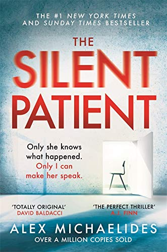

THE WHISPER MAN

-Alex North
In this dark, suspenseful thriller, Alex North weaves a multi-generational tale of a father and son caught in the crosshairs of an investigation to catch a serial killer preying on a small town.
THE SILENT PATIENT
Alex Michaelides
The Silent Patient is a shocking psychological thriller of a woman's act of violence against her husband and of the therapist obsessed with uncovering her motive. Alicia Berenson's life is seemingly perfect.
THE WHISPER MAN
-Alex North
In this dark, suspenseful thriller, Alex North weaves a multi-generational tale of a father and son caught in the crosshairs of an investigation to catch a serial killer preying on a small town.
VARIETY

-Colleen Hoover
When Lowen moves into the Crawford house to go over Verity's notes, Lowen sees that Verity has been left largely unresponsive after a car accident. She also learns that Verity's two twin daughters died in the months preceding Verity's accident.
THE MAIDENS
-Alex Michaelides
It tells an elegant and atmospheric story of secret societies and murder at a university. Grieving widow Mariana Andros' life is turned upside-down one evening when she receives a fateful call from her niece, Zoe, a student at Cambridge University.
THE GUEST LIST
-Lucy Foley
The Guest List—set at a ritzy wedding-gone-wrong on a remote Scottish isle—starts with a murder, and then plays a game of keep-away with the victim's identity until the very last pages.